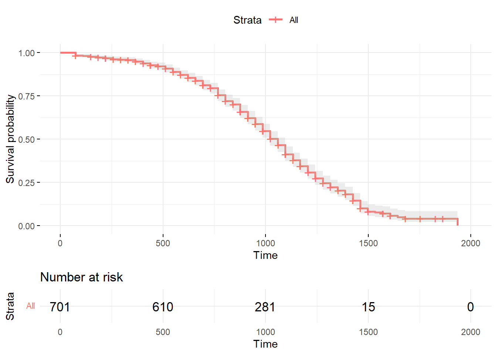

Chapter 49 Understanding Length of Service Using Survival Analysis
In this chapter, we will learn how to perform a survival analysis in order to understand employees length of service prior to leaving the organization.
49.1 Conceptual Overview
The delightfully named survival analysis refers to various statistical techniques that can be used to investigate how long it takes for an event to occur. How did it get that name? Well, the term survival comes from medical and health studies that predicted, well, survival time. Of course, survival analysis can also be applied to other phenomena of interest. For example, in organizations, we might wish to understand the probability of individuals voluntarily leaving the organization by certain time points and the factors, predictors, or drivers (i.e., covariates) that might help us understand how long certain individuals are likely stay or their expected length of service. I should note that survival analysis also goes by other names, such as failure analysis, time-to-event analysis, duration analysis, event-history analysis, and accelerated failure time analysis.
49.1.1 Censoring
Due to normal data acquisition processes, we often collect data at a specific point in time, where historical data might only be available for certain individuals (or based on whether they meet the inclusions criteria to be part of our sample). Further, for some individuals, the event in question (e.g., voluntary turnover) will not have occurred (at least in the context of the acquired data), which means that their length of survival until the event remains unknown. Alternatively, other individuals may have experienced another event (e.g., involuntary turnover) that was the reason for their exit from the study. Individuals who fall into these categories are referred to as censored cases. There are different types of censoring, such as right censoring, left censoring, and interval censoring.
Right-censored cases are those cases for which the event has not yet occurred when data acquisition is completed and the study has ended, or those cases that dropped out of study data before the end for reasons other than the focal event; for example, if we would like to understand the survival rate for individuals who voluntarily turn over (i.e., focal event), then examples of right-censored individuals include those individuals who are still employed at the organization by the end of the study and those individuals who dropped out of the study prematurely due because they were fired (i.e., involuntarily turned over).
Left-censored cases are those cases for which the focal event occurred prior to the study commencing. In organizational research, this would often mean that a case was mistakenly included in the study sample, when the case should have been excluded. An example of a left-censored case - albeit an unlikely one - would be if for some reason it was later determined that an employee included a study sample had voluntarily turned over (i.e., focal event) prior to the beginning of the 5-year study period. In organizational research, usually such cases will just be removed from the sample prior to analysis.
Interval-censored cases are those cases for which the focal event occurred between two time points but where the exact time of the event remains unknown. As an example, suppose that for some reason, the exact day on which an employee voluntarily turned over (i.e., focal event) is unknown, but organizational records indicate that the individual was employed at the end of the prior month but not employed by the end of the subsequent month. This individual would be interval censored.
In this chapter, we will focus on right-censored cases, as this is perhaps the most common type of censoring we concern ourselves with in organizational research.
49.1.2 Types of Survival Analysis
There are different techniques we can use to carry out survival analysis, and different techniques are suited to answering different questions. The following are survival analyses that you might encounter: Kaplan-Meier analysis, Cox proportional hazards model (i.e., Cox regression), log-logistic parametric model, Weibull model, survival tree analysis, and survival random forest analysis. In this tutorial, we will focus on implementing Kaplan-Meier analysis and the Cox proportional hazards model. Before doing so, however, we will learn about what is referred to as the life table.
49.1.2.1 Life Table
A life table is a descriptive tool and contains important information regarding length of survival and survival rate, and it is descriptive in nature. A life table displays the proportion of survivors at specific time points and, specifically, between two time points, where the latter is referred to as a time interval (\(i\)). The time interval width chosen affects the survival probabilities, so its important to choose the size of the interval wisely and thoughtfully. One approach is to create a new time interval at each subsequent time at which the event occurs; this is usually the default approach. Another approach is to create time intervals that are meaningful for the context; for example, if the focal event is voluntary turnover, then we might decide that the survival probability/rate should be assessed at 30, 60, and 90 days post hire and then 6 months, 1 year, 2 years, 3 years, and so forth and so on.
Lets consider an example of a life table. Imagine you wish to know how many people remained with the organization between their 61st day of work until the end of their probationary period at 89 days post hire. First, we need to estimate \(r_i\), where \(r_i\) refers to the adjusted number of individuals at risk during the time interval in question, which takes into account how many individuals entered the interval and how many individuals were censored.
\(r_i = n_i - \frac{1}{2}c_i\)
where \(n_i\) refers to the number of individuals who entered the interval (e.g., 60-89 days), and \(c_i\) refers to the number of individuals who were censored in the time interval. For example, if 100 individuals entered the interval and 10 individuals were censored, then \(r_i\) is equal to 95.
\(r_i = 100 - \frac{1}{2}*10 = 95\)
Next, we can calculate \(q_i\), which refers to the proportion of individuals who experienced the event during the time interval in question (i.e., did not survive).
\(q_i = \frac{d_i}{r_i}\)
where \(d_i\) refers to the number of individuals who experienced the event during the time interval (i.e., did not survive). Lets assume that 15 individuals experienced the event during this interval; this means that \(q_i\) is equal to .16.
\(q_i = \frac{15}{95} = .16\)
To calculate \(p_i\), which is the proportion of individuals who did not experience the event during the time interval, we just subtract \(q_i\) from \(1\). You can think of \(p_i\) as the survival rate for a specific time interval.
\(p_i = 1 - q_i\)
If we plug our \(q_i\) value of .14 into the formula, we arrive at a \(p_i\) equal to .84.
\(p_i = 1 - .16 = .84\)
Finally, to calculate \(s_i\), which refers to the proportion of individuals who survived past/through the time interval in question (i.e., cumulative survival rate or cumulative survival proportion/probability), we use the following formula.
\(s_i = s_{i-1} * p_i\)
where \(s_{i-1}\) refers to the proportion of individuals who survived past/through the previous time interval. Lets assume in this example that \(s_{i-1}\) is equal to .86, which would indicate that 86% of individuals survived past the previous time interval (i.e., did not experience the event).
\(s_i = .86 * .84 = .72\)
As you can see, in this example, the proportion of individuals who survived past/through the focal time interval is .72. In other words, the cumulative survival rate is .72 for that time interval.
When we assemble all of these estimates together, we end up with a life table like the one shown below.
| Interval (\(i\)) | \(n_i\) | \(c_i\) | \(r_i\) | \(d_i\) | \(q_i\) | \(p_i\) | \(s_i\) |
|---|---|---|---|---|---|---|---|
| 0-29 days | 120 | 2 | 119 | 15 | .13 | .87 | .87 |
| 30-59 days | 103 | 1 | 102.5 | 2 | .02 | .98 | .85 |
| 60-89 days | 100 | 10 | 95 | 15 | .16 | .84 | .71 |
49.1.2.2 Kaplan-Meier Analysis
Kaplan-Meier analysis is a nonparametric method, which means that it does not have the same distributional assumptions as a parametric method. This analysis allows us to estimate the standard error and confidence interval of the survival rate (\(s_i\)) at each time interval and across the entire study, which helps us to account for and understand uncertainty owing to sampling error. Using Kaplan-Meier analysis, we can also understand how independent groups of cases (e.g., race/ethnicity groups) differ with respect to their survival rates and their overall curves/trajectories. Kaplan-Meier analysis is an example of a descriptive approach to survival analysis, and it is also referred to as the product-limit method/estimator.
49.1.2.3 Cox Proportional Hazards Model
The Cox proportional hazards model is a semiparametric method in that it makes a distributional assumption about the covariates in the model and their log-linear relation to the hazard (i.e., instantaneous rate of experiencing focal event), but does not make a distributional assumption about the hazard function itself. This analysis allows us to investigate how categorical and continuous covariates (e.g., predictor variables) might affect individuals length of survival.
49.1.2.4 Statistical Assumptions
Given that Kaplan-Meier analysis and the Cox proportional hazards model are examples of nonparametric and semiparametric methods, respectively, we dont need to meet many of the statistical assumptions commonly associated with traditional parametric methods. Kaplan-Meier analysis makes the following assumptions:
- Experiencing the focal event and being censored are mutually exclusive and independent; (b) censoring is similar between independent groups (i.e., by levels of categorical covariate);
- No interventions or trends were introduced during the study time frame that may have influenced the probability of experiencing the focal event. As described above, the Cox proportional hazards model is a semiparametric method and has a distributional assumption about the covariates in the model and their relation to the hazard. In addition, this type of model makes the following assumptions:
- Time-to-event values of cases are independent of one another;
- Hazard ratio is constant over time;
- Model covariates have multiplicative effect on the hazard (i.e., association are not linear).
49.1.2.5 Statistical Signficance
Using null hypothesis significance testing (NHST), we interpret a p-value that is less than .05 (or whatever two- or one-tailed alpha level we set) to meet the standard for statistical significance, meaning that we reject the null hypothesis that the coefficient is equal to zero. In other words, if a coefficients p-value is less than .05, we conclude that the coefficient differs from zero to a statistically significant extent. In contrast, if the coefficients p-value is equal to or greater than .05, then we fail to reject the null hypothesis that the coefficient is equal to zero. Put differently, if a coefficients p-value is equal to or greater than .05, we conclude that the coefficient does not differ from zero to a statistically significant extent, leading us to conclude that there is no association between the predictor variable and the outcome variable in the population.
When setting an alpha threshold, such as the conventional two-tailed .05 level, sometimes the question comes up regarding whether borderline p-values signify significance or nonsignificance. For our purposes, lets be very strict in our application of the chosen alpha level. For example, if we set our alpha level at .05, p = .049 would be considered statistically significant, and p = .050 would be considered statistically nonsignificant.
49.1.3 Conceptual Video
For a more in-depth conceptual review of survival, please check out the following conceptual video.
Link to conceptual video: https://youtu.be/874ZcEMlUas
49.2 Tutorial
This chapters tutorial demonstrates how to perform survival analysis using R.
49.2.1 Video Tutorials
As usual, you have the choice to follow along with the written tutorial in this chapter or to watch the video tutorial below.
Link to video tutorial: https://youtu.be/Bubo_7R7h0Q
49.2.2 Functions & Packages Introduced
| Function | Package |
|---|---|
survfit |
survival |
Surv |
survival |
hist |
base R |
subset |
base R |
print |
base R |
summary |
base R |
c |
base R |
plot |
base R |
ggsurvplot |
survminer |
coxph |
survival |
scale |
base R |
factor |
base R |
drop_na |
tidyr |
anova |
base R |
49.2.3 Initial Steps
If you havent already, save the file called Survival.csv into a folder that you will subsequently set as your working directory. Your working directory will likely be different than the one shown below (i.e., "H:/RWorkshop"). As a reminder, you can access all of the data files referenced in this book by downloading them as a compressed (zipped) folder from the my GitHub site: https://github.com/davidcaughlin/R-Tutorial-Data-Files; once youve followed the link to GitHub, just click Code (or Download) followed by Download ZIP, which will download all of the data files referenced in this book. For the sake of parsimony, I recommend downloading all of the data files into the same folder on your computer, which will allow you to set that same folder as your working directory for each of the chapters in this book.
Next, using the setwd function, set your working directory to the folder in which you saved the data file for this chapter. Alternatively, you can manually set your working directory folder in your drop-down menus by going to Session > Set Working Directory > Choose Directory. Be sure to create a new R script file (.R) or update an existing R script file so that you can save your script and annotations. If you need refreshers on how to set your working directory and how to create and save an R script, please refer to Setting a Working Directory and Creating & Saving an R Script.
# Set your working directory
setwd("H:/RWorkshop")Next, read in the .csv data file called Survival.csv using your choice of read function. In this example, I use the read_csv function from the readr package (Wickham, Hester, and Bryan 2023). If you choose to use the read_csv function, be sure that you have installed and accessed the readr package using the install.packages and library functions. Note: You dont need to install a package every time you wish to access it; in general, I would recommend updating a package installation once ever 1-3 months. For refreshers on installing packages and reading data into R, please refer to Packages and Reading Data into R.
# Install readr package if you haven't already
# [Note: You don't need to install a package every
# time you wish to access it]
install.packages("readr")# Access readr package
library(readr)
# Read data and name data frame (tibble) object
survdat <- read_csv("Survival.csv")## Rows: 701 Columns: 9
## Column specification
## Delimiter: ","
## chr (4): Start_date, Gender, Race, Turnover_date
## dbl (5): id, Pay_hourly, Pay_sat, Turnover, LOS
##
## Use `spec()` to retrieve the full column specification for this data.
## Specify the column types or set `show_col_types = FALSE` to quiet this message.# Print the names of the variables in the data frame (tibble) object
names(survdat)## [1] "id" "Start_date" "Gender" "Race" "Pay_hourly" "Pay_sat" "Turnover"
## [8] "Turnover_date" "LOS"# View variable type for each variable in data frame (tibble) object
str(survdat)## spc_tbl_ [701 9] (S3: spec_tbl_df/tbl_df/tbl/data.frame)
## $ id : num [1:701] 1073 1598 1742 1125 1676 ...
## $ Start_date : chr [1:701] "5/4/2014" "9/30/2016" "3/14/2018" "9/7/2014" ...
## $ Gender : chr [1:701] "Man" "Man" "Man" "Man" ...
## $ Race : chr [1:701] "Black" "Black" "Black" "Black" ...
## $ Pay_hourly : num [1:701] 12.6 17.7 12.6 15.2 14.7 ...
## $ Pay_sat : num [1:701] 4.67 3 4.33 3 3.33 ...
## $ Turnover : num [1:701] 1 1 0 1 0 1 2 1 1 0 ...
## $ Turnover_date: chr [1:701] "1/14/2017" "5/7/2018" NA "4/13/2017" ...
## $ LOS : num [1:701] 986 584 293 949 622 ...
## - attr(*, "spec")=
## .. cols(
## .. id = col_double(),
## .. Start_date = col_character(),
## .. Gender = col_character(),
## .. Race = col_character(),
## .. Pay_hourly = col_double(),
## .. Pay_sat = col_double(),
## .. Turnover = col_double(),
## .. Turnover_date = col_character(),
## .. LOS = col_double()
## .. )
## - attr(*, "problems")=<externalptr># View first 6 rows of data frame (tibble) object
head(survdat)## # A tibble: 6 9
## id Start_date Gender Race Pay_hourly Pay_sat Turnover Turnover_date LOS
## <dbl> <chr> <chr> <chr> <dbl> <dbl> <dbl> <chr> <dbl>
## 1 1073 5/4/2014 Man Black 12.6 4.67 1 1/14/2017 986
## 2 1598 9/30/2016 Man Black 17.7 3 1 5/7/2018 584
## 3 1742 3/14/2018 Man Black 12.6 4.33 0 <NA> 293
## 4 1125 9/7/2014 Man Black 15.2 3 1 4/13/2017 949
## 5 1676 4/19/2017 Man Black 14.7 3.33 0 <NA> 622
## 6 1420 12/25/2015 Man Black 15.9 4.33 1 7/31/2018 949There are 9 variables and 701 cases (i.e., individuals) in the survdat data frame: id, Start_date, Gender, Race, Pay_hourly, Pay_sat, Turnover, Turnover_date, and LOS. In this tutorial we will focus on just Race, Pay_hourly, Pay_sat, Turnover, and LOS. the Race variable is categorical (nominal) and contains information about the race for each case in the sample. The Pay_hourly variable contains numeric data regarding the hourly pay rate of each individual when they either last worked in the organization or their current hourly pay rate. The Pay_sat variable comes from a pay satisfaction survey, and represents the overall perceived satisfaction with pay, ranging from 1 (low) to 5 (high). The Turnover variable indicates whether a case stayed in the organization (0), voluntarily quit (1), or involuntarily left. Finally, the LOS variable stands for length of service, and it represents how many days an individual worked in the organization prior to leaving or how long those who were employed at the time of the data collection had worked in the organization thus far.
49.2.4 Create a Censoring Variable
Lets assume that our focal event for which we wish to estimate survival is voluntary turnover. Note that our Turnover variable has three levels: 0 = stayed, 1 = voluntary turnover, 2 = involuntary turnover. Given that, we need to create a variable that can be used to classify the right-censored cases, which are those individuals who are still employed at the organization at the end of the study (Turnover = 0) and those who left the organization for reasons other than voluntary turnover (Turnover = 2).
Now were ready to create a new variable called censored in which cases with Turnover equal to 1 are set to 1; this will indicate the individuals who experienced the event (i.e., voluntary turnover) within the study. Next cases with Turnover equal to 0 or 2 are set to 1 for the censored variable, and these cases represented are our right-censored cases.
# Create censoring variable
survdat$censored[survdat$Turnover == 1] <- 1
survdat$censored[survdat$Turnover == 0 | survdat$Turnover == 2] <- 049.2.5 Inspect Distribution of Length of Service
To better understand our data, lets run a simple histogram for length of service (LOS) for all cases in our data frame (survdat) using the hist function from base R.
# Inspect distribution for LOS for all cases
hist(survdat$LOS)Interestingly, length of service looks normally distributed in this sample. Lets drill down a bit deeper by looking at length of service for just those individuals who stayed in the organization for the duration of the study. To do so, lets bring in the subset function from base R and integrate it within our hist function.
# Inspect distribution for LOS for those who stayed
hist(subset(survdat, Turnover==0)$LOS)
This distribution also looks relatively normal. Next, lets inspect the distributions for those who voluntarily turned over.
# Inspect distribution for LOS for those who voluntarily turned over
hist(subset(survdat, Turnover==1)$LOS)
Both of these distributions seem to be relatively normal as well, although the distribution for just those individuals who involuntarily turned over has many fewer cases. Please note that it is not unusual to see nonnormal distributions of length of service; for example, in some industries, there tends to be a large number of first day no shows for certain jobs and a higher turnover during the first 90 days on-the-job than after the first 90 days. This can result in a positively skewed distribution.
49.2.6 Conduct Kaplan-Meier Analysis & Create Life Table
Well begin by taking a descriptive approach to survival analysis. That is, well creating a life table and conduct a Kaplan-Meier analysis. If you havent already, be sure to install and access the survival package (Therneau 2021; Terry M. Therneau and Patricia M. Grambsch 2000).
# Install survival package if you haven't already
install.packages("survival")# Access survival package
library(survival)To begin, we will use the survfit and Surv functions from the survival package, which allow us to fit a survival model based on a survival object. In this case, a survival object contains a vector of censored and non-censored values for the cases in our data frame, where the censored values are followed by a plus (+) sign. [Remember, we created a variable called censored above, which will serve as the basis for distinguishing between censored and non-censored cases in our data frame (survdat).] That is, the behind-the-scenes vector shows how long each person survived before the event in question, and if they were still surviving at the time the data were acquired throughout the study or left the study for some other reason, then they are considered to be (right) censored.
Lets name our Kaplan-Meier analysis model km_fit1 using the <- operator. Next, type the name of the survfit function from the survival package. As the first argument, specify the survival model by specifying the outcome to the left of the ~ (tilde) symbol and the predictor to the right. As the outcome, we type the Surv function with the survival length variable (length of service: LOS) as the first argument, and the variable that indicates which cases should be censored (censored) should be typed as the second argument; cases with a zero (0) on the second variable (censored) are treated as censored because they did not experience the event in question (i.e., voluntary turnover). As our predictor, we will specify the numeral 1 because we want to begin by estimating a null model (i.e., no predictor variables); this value goes to the right of the ~ (tilde) symbol. As the second argument in the survfit function, type data= followed by the name of the data frame object (survdat) to which the aforementioned variables belong. As the final argument, type type="kaplan-meier" to specify that we wish to use Kaplan-Meier estimation. Use the print function from base R to view the basic descriptive survival information for the entire sample.
# Conduct Kaplan-Meier analysis
km_fit1 <- survfit(Surv(LOS, censored) ~ 1,
data=survdat,
type="kaplan-meier")
# Print basic descriptive survival information
print(km_fit1)## Call: survfit(formula = Surv(LOS, censored) ~ 1, data = survdat, type = "kaplan-meier")
##
## n events median 0.95LCL 0.95UCL
## [1,] 701 463 1059 1022 1095In the output, we find some basic descriptive information about our survival model. The n column indicates the number of total cases in our sample (e.g., 701). The events column indicates how many cases experienced the event over the course of the study (e.g., 463), where in this example, the event in question is voluntary turnover. The median column indicates the median length of time (e.g., 1059), where time in this example is measured in days of length of service before someone experiences the event; this is determined based on the time to event when the cumulative survival rate is .50. The 0.95LCL and 0.95UCL contain the upper and lower limits of the 95% confidence interval surrounding the median value (e.g., 1022-1095). Based on this output, we can concluded that 479 individuals out of 701 individuals voluntarily turned over over the course of the study time frame, and the median length of service prior to leaving was 1059 days (95% CI[1022, 1095]).
Note: If the overall median length of survival (i.e., time to event) and/or the associated lower/upper confidence interval limits is/are NA, it indicates a cumulative survival rate of .50 was not reached for those estimates. Usually, you can see this visually in a survival plot, as the survival curve and/or its confidence interval limits will not cross a cumulative survival rate/probability of .50.
Next, lets summarize the Kaplan-Meier analysis object we created (km_fit1) using the summary function from base R. Just enter the name of the model object as the sole parenthetical argument in the summary function.
# Summarize results of Kaplan-Meier analysis using default time intervals
# and create a life table
summary(km_fit1)## Call: survfit(formula = Surv(LOS, censored) ~ 1, data = survdat, type = "kaplan-meier")
##
## time n.risk n.event survival std.err lower 95% CI upper 95% CI
## 73 701 12 0.9829 0.00490 0.9733 0.9925
## 110 682 1 0.9814 0.00510 0.9715 0.9915
## 146 681 3 0.9771 0.00566 0.9661 0.9883
## 183 677 4 0.9713 0.00632 0.9590 0.9838
## 219 672 3 0.9670 0.00677 0.9538 0.9804
## 256 667 4 0.9612 0.00732 0.9470 0.9757
## 292 659 1 0.9597 0.00745 0.9453 0.9745
## 329 655 1 0.9583 0.00758 0.9435 0.9733
## 365 652 6 0.9495 0.00832 0.9333 0.9659
## 402 641 7 0.9391 0.00911 0.9214 0.9571
## 438 633 8 0.9272 0.00991 0.9080 0.9469
## 475 616 4 0.9212 0.01030 0.9012 0.9416
## 511 610 8 0.9091 0.01101 0.8878 0.9310
## 548 601 13 0.8895 0.01205 0.8662 0.9134
## 584 584 11 0.8727 0.01284 0.8479 0.8982
## 621 566 11 0.8557 0.01357 0.8296 0.8828
## 657 549 12 0.8370 0.01431 0.8095 0.8656
## 694 532 16 0.8119 0.01520 0.7826 0.8422
## 730 506 11 0.7942 0.01577 0.7639 0.8257
## 767 487 25 0.7534 0.01694 0.7210 0.7874
## 803 454 20 0.7203 0.01774 0.6863 0.7559
## 840 428 12 0.7001 0.01818 0.6653 0.7366
## 876 406 24 0.6587 0.01897 0.6225 0.6969
## 913 366 20 0.6227 0.01956 0.5855 0.6622
## 949 339 19 0.5878 0.02004 0.5498 0.6284
## 986 313 22 0.5465 0.02047 0.5078 0.5881
## 1022 281 23 0.5017 0.02081 0.4626 0.5442
## 1059 247 18 0.4652 0.02101 0.4258 0.5082
## 1095 224 25 0.4133 0.02107 0.3740 0.4567
## 1132 189 16 0.3783 0.02103 0.3392 0.4218
## 1168 163 15 0.3435 0.02092 0.3048 0.3870
## 1205 138 14 0.3086 0.02077 0.2705 0.3521
## 1241 114 13 0.2734 0.02057 0.2359 0.3169
## 1278 96 10 0.2449 0.02030 0.2082 0.2882
## 1314 84 8 0.2216 0.01997 0.1857 0.2644
## 1351 69 6 0.2023 0.01973 0.1672 0.2449
## 1387 60 6 0.1821 0.01941 0.1478 0.2244
## 1424 51 10 0.1464 0.01860 0.1141 0.1878
## 1460 32 10 0.1007 0.01753 0.0715 0.1416
## 1497 21 4 0.0815 0.01661 0.0546 0.1215
## 1533 15 1 0.0760 0.01637 0.0499 0.1159
## 1570 14 1 0.0706 0.01607 0.0452 0.1103
## 1606 11 2 0.0578 0.01550 0.0341 0.0978
## 1643 7 1 0.0495 0.01533 0.0270 0.0908
## 1679 6 1 0.0413 0.01483 0.0204 0.0835
## 1935 1 1 0.0000 NaN NA NABy default, this function begins each new time interval at the time in which a new event (i.e., voluntary turnover) occurs. This explains why the time intervals are not consistent widths in the time column of the life table output. The n.risk column corresponds to the the number of individuals who entered the time interval (\(i\)), which I introduced earlier in this tutorial using the notation \(n_i\). The n.event column contains the number of individuals who experienced the event during the time interval (i.e., did not survive), which I introduced earlier using the notation \(d_i\). The survival column contains the the proportion of individuals who survived past/through the time interval in question, which is referred to as the (cumulative) survival rate (\(s_i\)). The std.err column provides the standard errors (SEs) associated with the cumulative survival rate points estimates, and the lower 95% CI and upper 95% CI columns provide the 95% confidence interval around the point cumulative survival rate point estimate. Thus, the survfit function in combination with the summary function provides us with an abbreviated life table.
We can, however, exert more control over the width of the time intervals in our life table output, and we might exert this control because we have business-related or theoretically meaningful time intervals that we would like to impose. Lets adapt our previous summary function by adding an additional argument relating to the time intervals. Specifically, as the second argument, type times= followed by the c (combine) function from base R to specify a vector of different time intervals for which you would like to estimate survival rates. In this example, I set the intervals at 30 days, 60 days, 90 days post hire, and up to 30 subsequent 90-day intervals after the initial 90 days (by using the 90*(1:30) notation).
# Summarize results of Kaplan-Meier analysis using pre-specified time intervals
# and create a life table
summary(km_fit1, times=c(30, 60, 90*(1:30)))## Call: survfit(formula = Surv(LOS, censored) ~ 1, data = survdat, type = "kaplan-meier")
##
## time n.risk n.event survival std.err lower 95% CI upper 95% CI
## 30 701 0 1.0000 0.00000 1.0000 1.0000
## 60 701 0 1.0000 0.00000 1.0000 1.0000
## 90 682 12 0.9829 0.00490 0.9733 0.9925
## 180 677 4 0.9771 0.00566 0.9661 0.9883
## 270 659 11 0.9612 0.00732 0.9470 0.9757
## 360 652 2 0.9583 0.00758 0.9435 0.9733
## 450 616 21 0.9272 0.00991 0.9080 0.9469
## 540 601 12 0.9091 0.01101 0.8878 0.9310
## 630 549 35 0.8557 0.01357 0.8296 0.8828
## 720 506 28 0.8119 0.01520 0.7826 0.8422
## 810 428 56 0.7203 0.01774 0.6863 0.7559
## 900 366 36 0.6587 0.01897 0.6225 0.6969
## 990 281 61 0.5465 0.02047 0.5078 0.5881
## 1080 224 41 0.4652 0.02101 0.4258 0.5082
## 1170 138 56 0.3435 0.02092 0.3048 0.3870
## 1260 96 27 0.2734 0.02057 0.2359 0.3169
## 1350 69 18 0.2216 0.01997 0.1857 0.2644
## 1440 32 22 0.1464 0.01860 0.1141 0.1878
## 1530 15 14 0.0815 0.01661 0.0546 0.1215
## 1620 7 4 0.0578 0.01550 0.0341 0.0978
## 1710 4 2 0.0413 0.01483 0.0204 0.0835
## 1800 3 0 0.0413 0.01483 0.0204 0.0835
## 1890 1 0 0.0413 0.01483 0.0204 0.0835The output includes a life table with the time intervals that we specified in the time column, along with the other columns that we reviewed in the previous output shown above. Looking at this life table, descriptively, we can see that the cumulative survival rate begins to drop more precipitously beginning at about 720 days post hire.
We can create a data visualization (i.e., line chart) of our km_fit1 model by using the plot function from base R. Simply, enter the name of the model object as the sole parenthetical argument of the plot function.
# Plot the cumulative survival rates (probabilities)
plot(km_fit1)The data visualization shown above provides a visual depiction of the survival curve/trajectory along with the 95% confidence interval for each time interval. Corroborating what we saw in our first life table output using the default time-interval settings, the cumulative survival rate begins to drop more precipitously when length of service is between 500 and 100 days. Note that the x-axis shows the length of service (in days), and the y-axis shows the cumulative survival rate (i.e., probability).
We can also create a more aesthetically pleasing data visualization of our km_fit1 model by using the ggsurvplot function from the survminer package (Kassambara, Kosinski, and Biecek 2021). If you havent already, install and access the survminer package.
# Install survminer package if you haven't already
install.packages("survminer")# Access survminer package
library(survminer)Using the ggsurvplot function, type the name of the Kaplan-Meier analysis object (km_fit1) as the first argument. As the second argument, type data= followed by the name of the data frame object (survdat). The following arguments are optional. Setting risk.table=TRUE requests the risk table as output. Setting conf.int=TRUE requests that the 95% confidence intervals be displayed to show uncertainty. Finally, because the ggsurvplot function is built in part on the ggplot2 package, we can request different data visualization themes from ggplot2; by setting ggtheme=theme_minimal(), we are requesting a minimalist theme.
# Plot the cumulative survival rates (probabilities)
ggsurvplot(km_fit1,
data=survdat,
risk.table=TRUE,
conf.int=TRUE,
ggtheme=theme_minimal())
The plot graphically displays the cumulative survival rates/probabilities and the risk table. The shading around the red line represents the 95% confidence intervals. The risk table below the plot displays the average number of cases at risk of experiencing the event (\(r_i\)) at the time intervals displayed on the x-axis.
Moving forward, lets extend our Kaplan-Meier analysis model by adding a categorical covariate (i.e., predictor variable) to our Kaplan-Meier analysis model to see if we can observe differences between groups/categories in terms of survival curves. Specifically, lets replace the numeral 1 from our previous model with the categorical Race variable, and lets name this model object km_fit2.
# Conduct Kaplan-Meier analysis with categorical covariate
km_fit2 <- survfit(Surv(LOS, censored) ~ Race,
data=survdat,
type="kaplan-meier")
print(km_fit2)## Call: survfit(formula = Surv(LOS, censored) ~ Race, data = survdat,
## type = "kaplan-meier")
##
## n events median 0.95LCL 0.95UCL
## Race=Black 283 190 1022 986 1095
## Race=HispanicLatino 79 57 1022 876 1132
## Race=White 339 216 1059 1022 1095In the output, we find basic descriptive information about our survival model; however, because we added the categorical covariate variable called Race, we now see the overall survival information for the study time frame displayed by Race categories. For example, the n column indicates the number of total cases in our sample by Race categories (e.g., 283, 79, 339), and the events column indicates how many cases experienced the event over the course of the study for each Race category (e.g., 190, 57, 216). This information allows us to segment the survival information by levels/categories of the categorical covariate added to the model.
As we did before, lets summarize the updated model object (km_fit2) using the default time intervals.
# Summarize results of Kaplan-Meier analysis using default time intervals
# and create a life table
summary(km_fit2)## Call: survfit(formula = Surv(LOS, censored) ~ Race, data = survdat,
## type = "kaplan-meier")
##
## Race=Black
## time n.risk n.event survival std.err lower 95% CI upper 95% CI
## 73 283 6 0.9788 0.00856 0.9622 0.9957
## 146 272 3 0.9680 0.01049 0.9477 0.9888
## 183 268 3 0.9572 0.01210 0.9337 0.9812
## 256 264 1 0.9535 0.01258 0.9292 0.9785
## 292 263 1 0.9499 0.01305 0.9247 0.9758
## 329 261 1 0.9463 0.01350 0.9202 0.9731
## 365 260 3 0.9354 0.01474 0.9069 0.9647
## 402 255 7 0.9097 0.01724 0.8765 0.9441
## 438 248 1 0.9060 0.01755 0.8723 0.9411
## 475 244 3 0.8949 0.01848 0.8594 0.9318
## 511 241 4 0.8800 0.01961 0.8424 0.9193
## 548 236 7 0.8539 0.02136 0.8131 0.8968
## 584 227 5 0.8351 0.02249 0.7922 0.8804
## 621 219 3 0.8237 0.02313 0.7796 0.8703
## 657 212 3 0.8120 0.02376 0.7668 0.8599
## 694 205 4 0.7962 0.02458 0.7494 0.8458
## 730 195 1 0.7921 0.02479 0.7450 0.8422
## 767 191 8 0.7589 0.02638 0.7089 0.8124
## 803 180 5 0.7378 0.02728 0.6862 0.7933
## 840 173 5 0.7165 0.02811 0.6635 0.7738
## 876 165 9 0.6774 0.02944 0.6221 0.7377
## 913 152 12 0.6239 0.03090 0.5662 0.6875
## 949 136 8 0.5872 0.03169 0.5283 0.6528
## 986 126 12 0.5313 0.03253 0.4712 0.5990
## 1022 110 8 0.4927 0.03291 0.4322 0.5616
## 1059 98 8 0.4525 0.03315 0.3919 0.5223
## 1095 89 9 0.4067 0.03312 0.3467 0.4771
## 1132 74 8 0.3627 0.03299 0.3035 0.4335
## 1168 63 6 0.3282 0.03272 0.2699 0.3990
## 1205 53 2 0.3158 0.03264 0.2579 0.3867
## 1241 47 5 0.2822 0.03244 0.2253 0.3535
## 1278 41 6 0.2409 0.03177 0.1860 0.3120
## 1314 33 3 0.2190 0.03130 0.1655 0.2898
## 1351 26 3 0.1937 0.03090 0.1417 0.2648
## 1387 21 3 0.1661 0.03034 0.1161 0.2376
## 1424 18 4 0.1292 0.02866 0.0836 0.1995
## 1460 11 6 0.0587 0.02336 0.0269 0.1281
## 1497 5 1 0.0470 0.02144 0.0192 0.1149
## 1606 3 2 0.0157 0.01464 0.0025 0.0979
## 1935 1 1 0.0000 NaN NA NA
##
## Race=HispanicLatino
## time n.risk n.event survival std.err lower 95% CI upper 95% CI
## 73 79 2 0.9747 0.0177 0.94065 1.000
## 256 77 1 0.9620 0.0215 0.92079 1.000
## 438 74 3 0.9230 0.0302 0.86569 0.984
## 475 71 1 0.9100 0.0325 0.84859 0.976
## 511 69 1 0.8968 0.0346 0.83159 0.967
## 548 68 1 0.8836 0.0365 0.81496 0.958
## 584 67 1 0.8705 0.0382 0.79863 0.949
## 621 66 3 0.8309 0.0428 0.75112 0.919
## 657 62 3 0.7907 0.0466 0.70444 0.887
## 694 58 2 0.7634 0.0488 0.67351 0.865
## 730 56 4 0.7089 0.0524 0.61330 0.819
## 767 51 2 0.6811 0.0539 0.58324 0.795
## 803 49 3 0.6394 0.0557 0.53901 0.758
## 876 44 3 0.5958 0.0573 0.49341 0.719
## 949 40 3 0.5511 0.0585 0.44753 0.679
## 1022 34 5 0.4701 0.0601 0.36585 0.604
## 1059 25 2 0.4325 0.0609 0.32815 0.570
## 1095 23 3 0.3761 0.0610 0.27357 0.517
## 1132 17 1 0.3539 0.0613 0.25201 0.497
## 1168 16 3 0.2876 0.0606 0.19023 0.435
## 1205 13 4 0.1991 0.0558 0.11491 0.345
## 1241 8 1 0.1742 0.0541 0.09476 0.320
## 1314 5 1 0.1394 0.0533 0.06582 0.295
## 1351 4 1 0.1045 0.0501 0.04084 0.267
## 1387 3 2 0.0348 0.0330 0.00545 0.223
## 1533 1 1 0.0000 NaN NA NA
##
## Race=White
## time n.risk n.event survival std.err lower 95% CI upper 95% CI
## 73 339 4 0.9882 0.00586 0.9768 1.000
## 110 333 1 0.9852 0.00656 0.9725 0.998
## 183 332 1 0.9823 0.00718 0.9683 0.996
## 219 330 3 0.9733 0.00877 0.9563 0.991
## 256 326 2 0.9674 0.00968 0.9486 0.987
## 365 317 3 0.9582 0.01094 0.9370 0.980
## 438 311 4 0.9459 0.01241 0.9219 0.971
## 511 300 3 0.9364 0.01343 0.9105 0.963
## 548 297 5 0.9207 0.01494 0.8918 0.950
## 584 290 5 0.9048 0.01629 0.8734 0.937
## 621 281 5 0.8887 0.01751 0.8550 0.924
## 657 275 6 0.8693 0.01884 0.8332 0.907
## 694 269 10 0.8370 0.02072 0.7973 0.879
## 730 255 6 0.8173 0.02174 0.7758 0.861
## 767 245 15 0.7673 0.02394 0.7217 0.816
## 803 225 12 0.7263 0.02541 0.6782 0.778
## 840 210 7 0.7021 0.02616 0.6527 0.755
## 876 197 12 0.6594 0.02733 0.6079 0.715
## 913 174 8 0.6290 0.02809 0.5763 0.687
## 949 163 8 0.5982 0.02876 0.5444 0.657
## 986 152 10 0.5588 0.02943 0.5040 0.620
## 1022 137 10 0.5180 0.02998 0.4625 0.580
## 1059 124 8 0.4846 0.03028 0.4287 0.548
## 1095 112 13 0.4284 0.03052 0.3725 0.493
## 1132 98 7 0.3978 0.03046 0.3423 0.462
## 1168 84 6 0.3693 0.03041 0.3143 0.434
## 1205 72 8 0.3283 0.03029 0.2740 0.393
## 1241 59 7 0.2894 0.03007 0.2360 0.355
## 1278 50 4 0.2662 0.02980 0.2138 0.332
## 1314 46 4 0.2431 0.02937 0.1918 0.308
## 1351 39 2 0.2306 0.02916 0.1800 0.295
## 1387 36 1 0.2242 0.02905 0.1739 0.289
## 1424 32 6 0.1822 0.02822 0.1345 0.247
## 1460 20 4 0.1457 0.02784 0.1002 0.212
## 1497 15 3 0.1166 0.02688 0.0742 0.183
## 1570 10 1 0.1049 0.02660 0.0638 0.172
## 1643 6 1 0.0874 0.02732 0.0474 0.161
## 1679 5 1 0.0699 0.02687 0.0329 0.149Just as we generated before when applying the summary function to a Kaplan-Meier analysis object, we find life table information. By default, the summary function begins each new time interval at the time in which a new event (i.e., voluntary turnover) occurs; however, now there are separate life tables for each level of the categorical covariate (i.e., Race). Note that the time intervals displayed in the time column of each table are specific to the cases found within each level/category of the categorical covariate.
Just as we did before, we can also set our time intervals. Lets choose the same time intervals as we did in our null model (without the covariate).
# Summarize results of Kaplan-Meier analysis using pre-specified time intervals
# and create a life table
summary(km_fit2, times=c(30, 60, 90*(1:30)))## Call: survfit(formula = Surv(LOS, censored) ~ Race, data = survdat,
## type = "kaplan-meier")
##
## Race=Black
## time n.risk n.event survival std.err lower 95% CI upper 95% CI
## 30 283 0 1.0000 0.00000 1.0000 1.0000
## 60 283 0 1.0000 0.00000 1.0000 1.0000
## 90 272 6 0.9788 0.00856 0.9622 0.9957
## 180 268 3 0.9680 0.01049 0.9477 0.9888
## 270 263 4 0.9535 0.01258 0.9292 0.9785
## 360 260 2 0.9463 0.01350 0.9202 0.9731
## 450 244 11 0.9060 0.01755 0.8723 0.9411
## 540 236 7 0.8800 0.01961 0.8424 0.9193
## 630 212 15 0.8237 0.02313 0.7796 0.8703
## 720 195 7 0.7962 0.02458 0.7494 0.8458
## 810 173 14 0.7378 0.02728 0.6862 0.7933
## 900 152 14 0.6774 0.02944 0.6221 0.7377
## 990 110 32 0.5313 0.03253 0.4712 0.5990
## 1080 89 16 0.4525 0.03315 0.3919 0.5223
## 1170 53 23 0.3282 0.03272 0.2699 0.3990
## 1260 41 7 0.2822 0.03244 0.2253 0.3535
## 1350 26 9 0.2190 0.03130 0.1655 0.2898
## 1440 11 10 0.1292 0.02866 0.0836 0.1995
## 1530 4 7 0.0470 0.02144 0.0192 0.1149
## 1620 1 2 0.0157 0.01464 0.0025 0.0979
## 1710 1 0 0.0157 0.01464 0.0025 0.0979
## 1800 1 0 0.0157 0.01464 0.0025 0.0979
## 1890 1 0 0.0157 0.01464 0.0025 0.0979
##
## Race=HispanicLatino
## time n.risk n.event survival std.err lower 95% CI upper 95% CI
## 30 79 0 1.0000 0.0000 1.00000 1.000
## 60 79 0 1.0000 0.0000 1.00000 1.000
## 90 77 2 0.9747 0.0177 0.94065 1.000
## 180 77 0 0.9747 0.0177 0.94065 1.000
## 270 76 1 0.9620 0.0215 0.92079 1.000
## 360 75 0 0.9620 0.0215 0.92079 1.000
## 450 71 3 0.9230 0.0302 0.86569 0.984
## 540 68 2 0.8968 0.0346 0.83159 0.967
## 630 62 5 0.8309 0.0428 0.75112 0.919
## 720 56 5 0.7634 0.0488 0.67351 0.865
## 810 45 9 0.6394 0.0557 0.53901 0.758
## 900 40 3 0.5958 0.0573 0.49341 0.719
## 990 34 3 0.5511 0.0585 0.44753 0.679
## 1080 23 7 0.4325 0.0609 0.32815 0.570
## 1170 13 7 0.2876 0.0606 0.19023 0.435
## 1260 5 5 0.1742 0.0541 0.09476 0.320
## 1350 4 1 0.1394 0.0533 0.06582 0.295
## 1440 1 3 0.0348 0.0330 0.00545 0.223
## 1530 1 0 0.0348 0.0330 0.00545 0.223
##
## Race=White
## time n.risk n.event survival std.err lower 95% CI upper 95% CI
## 30 339 0 1.0000 0.00000 1.0000 1.000
## 60 339 0 1.0000 0.00000 1.0000 1.000
## 90 333 4 0.9882 0.00586 0.9768 1.000
## 180 332 1 0.9852 0.00656 0.9725 0.998
## 270 320 6 0.9674 0.00968 0.9486 0.987
## 360 317 0 0.9674 0.00968 0.9486 0.987
## 450 301 7 0.9459 0.01241 0.9219 0.971
## 540 297 3 0.9364 0.01343 0.9105 0.963
## 630 275 15 0.8887 0.01751 0.8550 0.924
## 720 255 16 0.8370 0.02072 0.7973 0.879
## 810 210 33 0.7263 0.02541 0.6782 0.778
## 900 174 19 0.6594 0.02733 0.6079 0.715
## 990 137 26 0.5588 0.02943 0.5040 0.620
## 1080 112 18 0.4846 0.03028 0.4287 0.548
## 1170 72 26 0.3693 0.03041 0.3143 0.434
## 1260 50 15 0.2894 0.03007 0.2360 0.355
## 1350 39 8 0.2431 0.02937 0.1918 0.308
## 1440 20 9 0.1822 0.02822 0.1345 0.247
## 1530 10 7 0.1166 0.02688 0.0742 0.183
## 1620 6 1 0.1049 0.02660 0.0638 0.172
## 1710 3 2 0.0699 0.02687 0.0329 0.149
## 1800 2 0 0.0699 0.02687 0.0329 0.149As you can see in the output, each life table now has the same pre-specified time intervals, which can make descriptive comparison of the table values to be a bit easier.
Now lets use the same arguments for the ggsurvplot function above, but this time, lets add the arguments pval=TRUE and pval.method= to see, respectively, whether the survival rates differ to a statistically significant extent across levels of the categorical covariate and what statistical test is used to estimate whether such differences exist in the population.
# Plot the cumulative survival rates (probabilities)
ggsurvplot(km_fit2,
data=survdat,
risk.table=TRUE,
pval=TRUE,
pval.method=TRUE,
conf.int=TRUE,
ggtheme=theme_minimal())
In the plot, three survival rates are presented - one for each race. Note that the p-value is greater than or equal to .05, so we would not conclude that any differences we observed descriptively/visually between the three races are statistically significant. We can see that the log-rank test was used to estimate whether such differences existed across levels of the categorical covariate; well revisit the log-rank test in the context of a Cox proportional hazards model below. In the table, we also find that the risk table is now stratified by levels (i.e., strata) of the categorical covariate.
49.2.7 Estimate Cox Proportional Hazards Model
The Cox proportional hazards (Cox PH) model is a semiparametric method and is sometimes referred to as Cox regression. It estimates the log-linear association between a covariate (or multiple covariates) in relation to instantaneous rate of experiencing the focal event (i.e., hazard). This method allows us to introduce continuous covariates (as well as categorical covariates) in a regression-like model. To estimate a Cox PH model, we will use the coxph function from the survival package. Lets name our model cox_reg1 using the <- operator. Next, type the name of the coxph function. As the first argument, specify the survival model by specifying the outcome to the left of the ~ (tilde) symbol and the predictor(s) to the right. As the outcome, we type the Surv function with the survival length variable (LOS) as the first argument, and as the second argument, the censored variable (which indicates which cases should be censored) should be entered. Lets keep this first model simple by simply applying Race as a categorical covariate, as we did above with the Kaplan-Meier analysis. As the second argument in the coxph function, type data= followed by the name of the data frame object (survdat) to which the aforementioned variables belong. Use the summary function from base R to summarize the results of the cox_reg1 object we specified.
# Estimate Cox proportional hazards model with categorical covariate
cox_reg1 <- coxph(Surv(LOS, censored) ~ Race, data=survdat)
# Print summary of results
summary(cox_reg1)## Call:
## coxph(formula = Surv(LOS, censored) ~ Race, data = survdat)
##
## n= 701, number of events= 463
##
## coef exp(coef) se(coef) z Pr(>|z|)
## RaceHispanicLatino 0.17936 1.19645 0.15147 1.184 0.236
## RaceWhite -0.14365 0.86619 0.09998 -1.437 0.151
##
## exp(coef) exp(-coef) lower .95 upper .95
## RaceHispanicLatino 1.1964 0.8358 0.8891 1.610
## RaceWhite 0.8662 1.1545 0.7120 1.054
##
## Concordance= 0.522 (se = 0.014 )
## Likelihood ratio test= 5.13 on 2 df, p=0.08
## Wald test = 5.28 on 2 df, p=0.07
## Score (logrank) test = 5.3 on 2 df, p=0.07In the output, we receive information about our sample size (n = 701) and the number of individuals in our sample who experienced the event of voluntary turnover (number of events = 463).
Next, you will see a table with coefficients, along with their exponentiated values, their standard errors, z-test value (Wald statistic value), and p-value (Pr(>|z|)). Because Race is a categorical variable with three levels/categories (i.e., Black, HispanicLatino, White), we see two lines in the table; these two lines reflect the dummy variables, which were created behind the scenes as part of the function. The Race category of Black comes first alphabetically (before HispanicLatino and White), and thus it serves as the default reference group. When comparing HispanicLatino individuals to Black individuals, we can see that there is not a difference in survival, as evidenced by the nonsignificant p-value (.236). Similarly, when comparing White individuals to Black individuals, there is not a significant difference in terms of survival (p = .151). Because these coefficients are nonsignificant, we will not proceed forward with interpretation of their respective hazard ratios, which appear in the subsequent table. We will, however, skip down to the last set of tests/values that appear in the output.
The value labeled as Concordance in the output is an aggregate estimate of how well the model predicted individuals experience of the event in time (i.e., model fit). Specifically, pairs of individuals are compared to determine whether the individual with the temporally earlier experience of the event is correctly predicted by the model. If model is accurate, the pair is considered concordant. The overall concordance score represents the proportion of pairs of individuals whose experience of the event (e.g., voluntary turnover) was accurately predicted. Accordingly, a concordance value of .50 indicates that the model does no better than chance (i.e., 50-50 chance of correctly predicting which individual incurs the event before another). In our data, the concordance value is .522 (SE = .014), which indicates that including the Race covariate in the model slightly improves the accuracy of our predictions but not by much more than a model with no covariates (i.e., null model).
The tests labeled as Likelihood ratio test (likelihood-ratio test), Wald test (Wald test), and Score (logrank) test (log-rank test) in the output all focus on whether the model with the covariates fits the data better than a model without the covariates (i.e., null model). Lets focus first on the likelihood-ratio test (LRT), which is chi-square goodness-of-fit test that compares nested models. The LRT is not statistically significant (\(\chi^2\) = 5.13, df = 2, p = .08), which indicates that the model with the Race covariate does not result in significantly better model fit than a null model without the covariate. Thus, we fail to reject the null hypothesis that our model with the covariates fits the same as the null model without the covariates.
The Wald test and log-rank test can be interpreted similarly to the LRT and similarly have to do with the overall fit of the model. These three tests are referred to as asymptotically equivalent because their values should converge when the sample size is sufficiently high. If youre working with a smaller sample size, the LRT tends to perform better. Given that, in general I recommend reporting and interpreting the log-rank test and, for space considerations, forgoing the reporting and interpretation of the other two tests. For example, in this example, the log-rank value is 5.3 (df = 2) with a p-value of .07, which indicates that the model with the Race covariate does not perform significantly better than a model with not covariates.
Lets extend our Cox PH model by addition two additional continuous covariates: Pay_hourly and Pay_sat. To add these covariates to our model, use the + symbol. Thus, as our first argument in the coxph function, enter the model specifications. As the second argument, type data= followed by the name of the data frame object (survdat) to which the aforementioned variables belong. Using the <- operator, lets name this new model cox_reg2. As before, use the summary function from base R to summarize the results of the cox_reg2 object.
# Estimate Cox proportional hazards model with categorical & continuous covariates
cox_reg2 <- coxph(Surv(LOS, censored) ~ Race + Pay_hourly + Pay_sat, data=survdat)
# Print summary of results
summary(cox_reg2)## Call:
## coxph(formula = Surv(LOS, censored) ~ Race + Pay_hourly + Pay_sat,
## data = survdat)
##
## n= 663, number of events= 445
## (38 observations deleted due to missingness)
##
## coef exp(coef) se(coef) z Pr(>|z|)
## RaceHispanicLatino 0.12087 1.12848 0.15796 0.765 0.444154
## RaceWhite -0.04446 0.95651 0.10367 -0.429 0.668008
## Pay_hourly -0.10971 0.89609 0.03276 -3.349 0.000812 ***
## Pay_sat 0.14135 1.15183 0.08135 1.738 0.082289 .
## ---
## Signif. codes: 0 '***' 0.001 '**' 0.01 '*' 0.05 '.' 0.1 ' ' 1
##
## exp(coef) exp(-coef) lower .95 upper .95
## RaceHispanicLatino 1.1285 0.8862 0.8280 1.5380
## RaceWhite 0.9565 1.0455 0.7806 1.1720
## Pay_hourly 0.8961 1.1160 0.8404 0.9555
## Pay_sat 1.1518 0.8682 0.9821 1.3509
##
## Concordance= 0.55 (se = 0.016 )
## Likelihood ratio test= 15.97 on 4 df, p=0.003
## Wald test = 16 on 4 df, p=0.003
## Score (logrank) test = 16.02 on 4 df, p=0.003In the output, effective total sample size is 663, which is due to 38 cases/observations being listwise deleted from the sample size due to missing values on the Pay_sat covariate; you can look at the survdat data frame to verify this, if you would like. Of those 663 individuals included in the analysis, 445 experienced the event.
Only the coefficient associated with the covariate Pay_hourly is statistically significant (b = -.110, p < .001) when accounting for the other covariates in the model. Given that, lets proceed forward to interpret its hazard ratio. The hazard ratio and its confidence interval can be found in the second table under the column exp(coef). (Note that exp stands for exponentiation, and for more information on exponentiation, check out the chapter covering logistic regression.) A hazard ratio is the ratio between the hazards (i.e., hazard rates) associated with two (adjacent) levels of a covariate. The hazard ratio associated with Pay_hourly is .896, which can be interpreted similar to an odds ratio from logistic regression. Because the hazard ratio is less than 1, it signifies a negative association, which we already knew from the regression coefficient. If we subtract .896 from 1, we get .104, which means we can interpret the association as follows: For every unit increase in the predictor variable, we can expect a 10.4% decrease in the expected hazard; or in other words, for every additional dollar in hourly pay earned, we can expect a 10.4% decrease in the likelihood of voluntary turnover. The column labeled exp(-coef) is just the reciprocal (i.e., 1 divided by hazard ratio) and thus allows us to interpret the association from a different perspective. Specifically, the reciprocal is 1.116, which can be interpreted as: For every dollar decrease in pay, the expected hazard will be 1.116 greater or in other words, we expected to see a 11.6% increase in the likelihood of voluntary turnover for every additional dollar earned. Its up to you to decide whether you want to report the hazard ratio, its reciprocal, or both. The columns labeled lower .95 and upper .95 contain the 95% confidence interval lower and upper limits for the hazard ratio, which for Pay_hourly are 95% CI[.840, .956].
Just for fun, lets specify our Cox PH model in equation form to show how we can estimate the log of the overall risk score for survival time prior to experiencing the event (i.e., overall predicted hazard ratio for an individual). Given the nonsignificant of the other covariates in the model, in real life, we might choose to run the model once more with the nonsignificant covariates excluded. For this example, however, Ill include nonsignificant covariates in the equation as well.
\(Log(Overall Risk) = .121*(Race[HL]) - .044*(Race[W]) - .110*(Pay_{hourly}) + .141*(Pay_{sat})\)
For example, if an individual is HispanicLatino, has an hourly pay rate of $16.00, and pay satisfaction equal to 4.00, then we would predict the log of their overall risk score for survival time prior to experiencing the event to be -1.075.
\(Log(Overall Risk) = .121*(1) - .044*(0) - .110*(16.00) + .141*(4.00)\)
\(Log(Overall Risk) = .121 - 0 - 1.760 + .564\)
\(Log(Overall Risk) = -1.075\)
If we exponentiate the log of the overall risk score, we arrive at .341.
\(e^{-1.075} = .341\)
Thus, the overall risk of voluntarily turning over for this individual is .341. This means that the expected hazard is 65.9% less when compared to an individual with scores of zero on each of the covariates in the model. This might sound great, but think about what this actually means. For our equation, an individual who earns zero on the covariates is Black, earns .00 dollars/hour, and has a score of .00 on the pay satisfaction scale. For this survival study, the minimum pay earned by an individual is 10.00 dollars/hour (mean = 14.11), the minimum score on the pay satisfaction scale is 2.00, and the sample is 40.4% Black, 11.3% HispanicLatino, and 48.4% White. This is why we might decide to grand-mean center our continuous covariates and specify a different reference group for our categorical covariate - for interpretation purposes. Lets go ahead and grand-mean center the continuous covariates and set the HispanicLatino individuals as the reference group. If you would like a deeper dive into how to grand-mean center variables, check out the chapter on centering and standardizing variables.
# Grand-mean center continuous covariates
survdat$c_Pay_hourly <- scale(survdat$Pay_hourly, center=TRUE, scale=FALSE)
survdat$c_Pay_sat <- scale(survdat$Pay_sat, center=TRUE, scale=FALSE)
# Change reference group to HispanicLatino for categorical covariate by re-ordering levels
survdat$HL_Race <- factor(survdat$Race, levels=c("HispanicLatino", "Black", "White"))
# Estimate Cox proportional hazards model with categorical & continuous covariates
cox_reg3 <- coxph(Surv(LOS, censored) ~ HL_Race + c_Pay_hourly + c_Pay_sat, data=survdat)
# Print summary of results
summary(cox_reg3)## Call:
## coxph(formula = Surv(LOS, censored) ~ HL_Race + c_Pay_hourly +
## c_Pay_sat, data = survdat)
##
## n= 663, number of events= 445
## (38 observations deleted due to missingness)
##
## coef exp(coef) se(coef) z Pr(>|z|)
## HL_RaceBlack -0.12087 0.88615 0.15796 -0.765 0.444154
## HL_RaceWhite -0.16533 0.84761 0.15773 -1.048 0.294567
## c_Pay_hourly -0.10971 0.89609 0.03276 -3.349 0.000812 ***
## c_Pay_sat 0.14135 1.15183 0.08135 1.738 0.082289 .
## ---
## Signif. codes: 0 '***' 0.001 '**' 0.01 '*' 0.05 '.' 0.1 ' ' 1
##
## exp(coef) exp(-coef) lower .95 upper .95
## HL_RaceBlack 0.8862 1.1285 0.6502 1.2077
## HL_RaceWhite 0.8476 1.1798 0.6222 1.1547
## c_Pay_hourly 0.8961 1.1160 0.8404 0.9555
## c_Pay_sat 1.1518 0.8682 0.9821 1.3509
##
## Concordance= 0.55 (se = 0.016 )
## Likelihood ratio test= 15.97 on 4 df, p=0.003
## Wald test = 16 on 4 df, p=0.003
## Score (logrank) test = 16.02 on 4 df, p=0.003Using our new output, lets construct the latest incarnation of the equation.
\(Log(Overall Risk) = -.121*(Race[B]) - .165*(Race[W]) - .110*(Pay_{hourly}) + .141*(Pay_{sat})\)
As you can see, the coefficients for Pay_hourly and Pay_sat remain the same, but now we have the HispanicLatino group set as the reference group and the coefficients of the dummy coded variables changed. Lets imagine the same individual as before for whom we would like to estimate the log of overall risk. For the two continuous covariates, we will subtract the grand mean of each of those aforementioned values (i.e., 16.00, 4.00) to arrive at their grand-mean centered values (i.e., 1.89, .32).
\(Log(Overall Risk) = -.121*(0) - .165*(0) - .110*(1.89) + .141*(.32)\)
\(Log(Overall Risk) = -.162\)
Now lets exponentiate the log of the overall risk.
\(e^{-.284} = .850\)
Keeping in mind that we have changed the reference group for the Race covariate to HispanicLatino and have grand-mean centered the Pay_hourly and Pay_sat covariates, the individual in questions overall risk score is .850. Thus, the expected hazard is 15.0% less for this individual when compared to individuals with scores of zero on each of the covariates in the model or in other words, when compared to individuals who are HispanicLatino, earn average hourly pay, and have average levels of pay satisfaction.
Lets now focus on the model-level performance and fit information in the output. Note that the concordance is .55 (SE = .016), which is an improvement from the concordance for the Cox PH model with just Race as a covariate. This indicates that including the two additional continuous covariates in the model improves the accuracy of our predictions. The significant log-rank test (16.02, df = 4, p = .003) indicates that the this model fits significant better than a null model.
We can also perform nested model comparisons between two non-null models. Before doing so, we need to make sure both models are estimated using the same data, which is required for the following comparison when there is missing data on one or more of the variables in the models. (Note: This can change the original model results for a model that was originally estimated with a larger sample because it had less missing data than the the model to which we wish to compare it.) First, we will pull in the drop_na function from the tidyr package to do the heavy lifting for us. Specifically, within the function, we note the name of the data frame followed by the names of all of the variables from the full model. Second, we will use the anova function from base R to perform the nested model comparison between cox_reg1 and cox_reg2.
# Access tidyr package
# install.packages("tidyr") # install if necessary
library(tidyr)
# Re-estimate Cox PH nested models by dropping all cases with missing data on focal variables
cox_reg1 <- coxph(Surv(LOS, censored) ~ Race,
data=drop_na(survdat, LOS, censored, Race, Pay_hourly, Pay_sat))
cox_reg2 <- coxph(Surv(LOS, censored) ~ Race + Pay_hourly + Pay_sat,
data=drop_na(survdat, LOS, censored, Race, Pay_hourly, Pay_sat))
# Nested model comparison
anova(cox_reg1, cox_reg2)## Analysis of Deviance Table
## Cox model: response is Surv(LOS, censored)
## Model 1: ~ Race
## Model 2: ~ Race + Pay_hourly + Pay_sat
## loglik Chisq Df Pr(>|Chi|)
## 1 -2459.6
## 2 -2453.1 13.141 2 0.001401 **
## ---
## Signif. codes: 0 '***' 0.001 '**' 0.01 '*' 0.05 '.' 0.1 ' ' 1Note that the chi-square test (\(\chi^2\) = 13.141, df = 2, p = .001) indicates that the full model with all covariates included fits the data significantly better than the smaller nested model with only the Race covariate included.